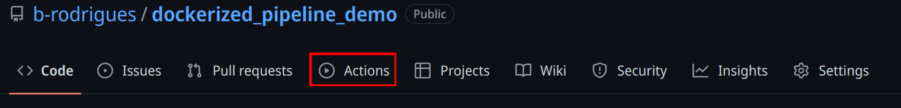

Chapter 10 (Very) basic CI/CD with Github Actions

We are almost at the end; actually, we could have stopped at the end of the previous chapter. We
have reached our goal; we are able to run pipeline in a 100% reproducible way. However, this
requires some manual steps. And maybe that’s not a problem; if your image is done, and users only
need to pull it and run the container, that’s not really a big problem. But you should keep in mind
that manual steps don’t scale. Let’s imagine another context; let’s suppose that you are part of a
company and that you are part of a team that needs to quickly ship products to clients. Maybe
several people contribute to the product using, an internal version control solution (like a Gitlab
instance that is deployed on the premises of your company). Maybe you even need to work on several
products in the same day; you (and your teammates) should only be focusing writing code (and
Dockerfiles)… your time and resources cannot get clogged by building images (which depending on
what you’re working on, can take quite some time). So ideally, we would want to offload these step.
That is what we are going to learn it. I should also note that this is going to be the shortest
chapter of this course. I’m not an expert on CI/CD with Github Actions, but wanted to show to you,
first of all, that this exists, and second of all, how you could get started.
So consider this chapter a very basic intro to CI/CD (Continuous Integration and Continuous Deployment/Delivery) and DevOps. In fact, to be more precise, we should be talking about GitOps. What’s Dev(Git)Ops? I think that the Atlassian page on DevOps makes a good job of explaining it. The bottom line is that DevOps makes it easy for developers to focus on coding, and make it easy for them to ship data products. The core IT team provides the required infrastructure and tools to make this possible. GitOps is a variant of DevOps where the definition of the infrastructure is versioned, and can be changed by editing simple text files. Through events, such as pushing to the repository, new images can be built, or containers executed. Data products can then also be redeployed automatically. All the steps we’ve been doing manually, with one simple push! It’s also possible, in the context of package development, to execute unit tests when code gets pushed to repo, or get documentation and vignettes compiled. This also means that you could be developing on a very thin client with only a text editor and git installed. Pushing to Github would then execute everything needed to have a package ready for sharing.
So our goal here is, in short, to do exactly the same as what we have been doing on our computer (so build an image, run a container, and get back 3 plots), but on Github.
10.1 Getting your repo ready for Github Actions
You should see an “Actions” tab on top of any Github repo:

This will open a new view where you can select a lot of available, ready to use actions. Shop around for
a bit, and choose the right one (depending on what you want to do). You should know that there is a
very nice repository with many actions for R. Once you’re doing
choosing an action, a new view in which you can edit a file will open. This file will have the name of
the chosen action, and have the .yaml extension. This file will be automatically added to your repository,
in the following path .github/workflows.
Let’s take a look at such a workflow file:
name: Hello world
on: [push]
jobs:
say-hello:
runs-on: ubuntu-latest
steps:
- run: echo "Hello from Github Actions!"
- run: echo "This command is running from an Ubuntu VM each time you push."Let’s study this workflow definition line by line:
name: Hello worldSimply gives a nawe to the workflow.
on: [push]When should this workflow be triggered? Here, whenever something gets pushed.
jobs:What is the actual things that should happen? This define a list of actions.
say-hello:This defines he say-hello job.
runs-on: ubuntu-latestThis job should run on an Ubuntu VM. You can also run jobs on Windows or macOS VMs.
steps:What are the different steps of the job?
- run: echo "Hello from Github Actions!"First, run the command echo "Hello from Github Actions!". This commands runs inside the VM.
Then, run this next command:
- run: echo "This command is running from an Ubuntu VM each time you push."Let’s push, and see what happens on github.com:
If we take a look at the commit we just pushed, we see this yellow dot next to the commit name.
This means that an action is running. We can then take a look at the output of the job, and
see that our commands, defined with the run statements in the workflow file, succeeded and echoed
what we asked them.
So, the next step is running our Docker image and getting back our plots. This is what our workflow file looks like:
name: Reproducible pipeline
on:
push:
branches: [ "main" ]
pull_request:
branches: [ "main" ]
jobs:
build:
runs-on: ubuntu-latest
steps:
- uses: actions/checkout@v3
- name: Build the Docker image
run: docker build -t my-image-name .
- name: Docker Run Action
run: docker run --rm --name my_pipeline_container -v /github/workspace/fig/:/home/graphs/:rw my-image-name
- uses: actions/upload-artifact@v3
with:
name: my-figures
path: /github/workspace/fig/
For now, let’s focus on the run statements, because these should be the familiar:
run: docker build -t my-image-name .and:
run: docker run --rm --name my_pipeline_container -v /github/workspace/fig/:/home/graphs/:rw my-image-nameThe only new thing here, is that the path has been changed to /github/workspace/. This is the
home directory of your repository, so to speak. Now there’s the uses keyword:
uses: actions/checkout@v3This action checkouts your repository inside the VM, so the files in the repo are available inside the VM. Then, there’s this action here:
- uses: actions/upload-artifact@v3
with:
name: my-figures
path: /github/workspace/fig/This action takes what’s inside /github/workspace/fig/ (which will be the output of our pipeline)
and upload the contents as a so-called “artifacts”. Artifacts are the outputs of your workflow. In our
case, as stated, the output of the pipeline. So let’s run this by pushing a change,
and let’s take a look at these artifacts!
As you can see from the video above, an zip file is now available and can be downloaded. This
zip contains our plots! It is thus possible to rerun our workflow in the cloud. This has the
advantage that we can now focus on simple changing the code, and not have to bother with
useless manual steps. For example, let’s change this target in the _targets.R file:
tar_target(
commune_data,
clean_unemp(unemp_data,
place_name_of_interest = c("Luxembourg", "Dippach",
"Wiltz", "Esch/Alzette",
"Mersch", "Dudelange"),
col_of_interest = active_population)
)
So I’ve added “Dudelange” to the list of communes to plot. Let me push this change to the repo now, and let’s take a look at the artifacts. The video below summarises the process:
As you can see in the video, the _targets.R script was changed, and the changes pushed to Github.
This triggered the action we’ve defined before. The plots (artifacts) get refreshed, and we can
download them. We see then that Dudelange was added in the communes.png plot!
It is also possible to “deploy” the plots directly to another branch, and do much, much more. I just wanted to give you a little taste of Github Actions (and more generally GitOps). The possibilities are virtually limitless, and I still can’t get over the fact that Github Actions is free (well, up to 2000 compute minutes and 500MB storage per month).